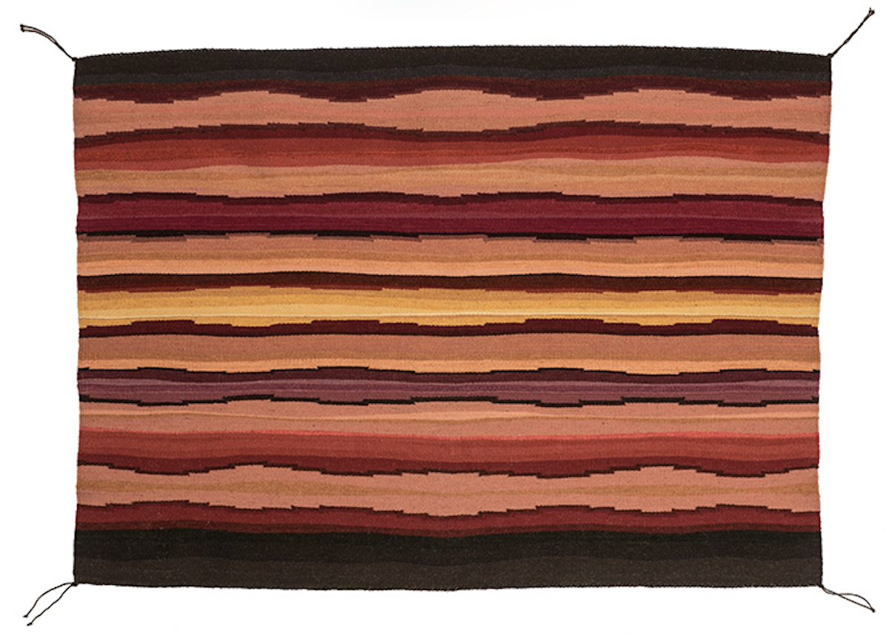
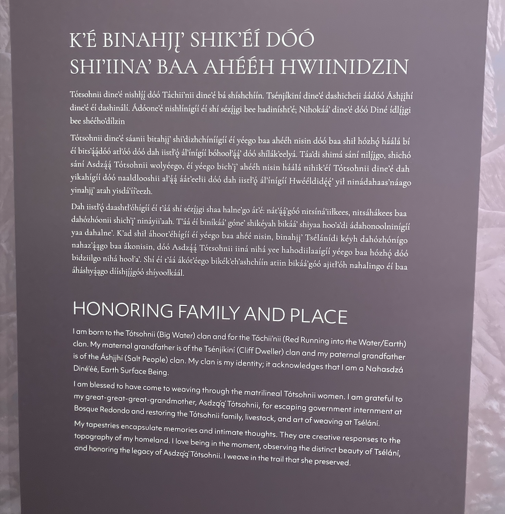
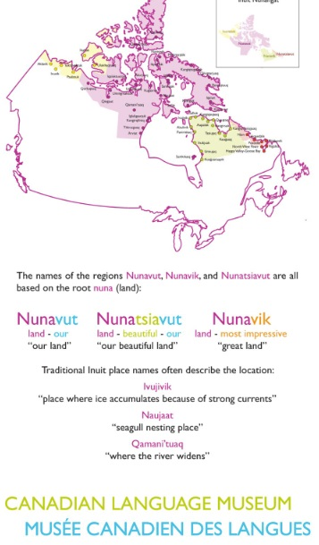

The National Museum of the American Indian (NMAI) cares for one of the world’s most extensive collections of Native artifacts from the Western Hemisphere. Today, the NMAI, which has been part of the Smithsonian Institution since 1989, operates a diverse and multifaceted cultural and educational enterprise comprising three facilities: the museum on the National Mall, the George Gustav Heye Center in New York City, and the Cultural Resources Center in Suitland, Maryland that stores some of the museum’s collections as well as houses the conservation, repatriations, and digital imaging programs. Both its DC and NYC locations are open to the public with exhibitions and programs.
The basis for the NMAI’s collection was started by the some 800,000 Native artifacts collected by George Gustav Heye, who founded the museum in New York 1916 and led as its director until 1956. In 1989, after Native leaders discovered that the Smithsonian Institution held thousands of human remains in storage, the NMAI was founded as part of the Smithsonian Institution as a way of “establishing a living memorial to Native Americans and their traditions” (National museum of the American Indian act, 1989, p. 2). The number one purpose of the new museum as stated in the 1989 congressional act was to “advance the study of Native Americans, including the study of language, literature, history, art, anthropology, and life” (National museum of the American Indian act, 1989, p. 2).
As listed on its website, the NMAI’s vision or long-term goal is “equity and social justice for the Native peoples of the Western Hemisphere through education, inspiration, and empowerment”; its mission statement is “in partnership with Native peoples and their allies, the National Museum of the American Indian fosters a richer shared human experience through a more informed understanding of Native peoples” (National Museum of the American Indian, n.d.-a). According to the current NMAI Director, Cynthia Chavez Lamar, who was appointed in 2022, the museum’s mission “prioritizes partnerships with Indigenous people and their allies” (National Museum of the American Indian, n.d.-b, para. 2). She goes on to say in her director’s address that the NMAI has maintained a philosophical and ethical approach since its founding of collaborating with Indigenous people and their communities in order to “foreground their perspectives, knowledge, and experiences in our exhibitions, collections documentation, programs, and projects” (National Museum of the American Indian, n.d.-b, para. 2).
In addition to its vision and mission, the NMAI also states on its website, which focuses on its exhibitions, research and collection, and education, that it is “steadfastly committed to bringing Native voices to what the museum writes and presents, whether on-site at one of the three NMAI venues, through the museum's publications, or via the Internet” (National Museum of the American Indian, n.d., para. 3). In general, the museum wants to be both a resource for Native communities and to also serve the public as an honest conduit to Native cultures. The NMAI aims to use its exhibitions, events, and even a new national education initiative called Native Knowledge 360° to both inspire positive change and challenge negative assumptions about Native peoples and how their history and culture are both preserved and taught in the United States.
Sublime Light: Tapestry Art of DY Begay is a special exhibit currently on display at the National Museum of the American Indian (NMAI) in Washington, DC. Sublime Light is the first retrospective exhibit for fiber artist DY Begay. Begay focuses on weaving and the exhibit showcases 48 of her tapestries that span over three decades of work. Begay is an Indigenous Diné (the preferred term for Navajo) artist whose unique art combines “her traditional Diné upbringing and experimental fiber art practice” (National Museum of the American Indian, n.d.-c, para. 2). Her works are made using traditional Diné weaving practices and incorporate unique colors and designs not typically found in traditional Diné weavings. While her style may not feature traditional designs, her works are still steeped in Diné culture. When discussing her work Begay states that “[her] weavings have become an intimate response to the topography of [her] origin.... [Her] ultimate goal is to capture and apply the natural beauty of Mother Earth by illustrating her vision into the warp and weft of [her] art,” (Mezoff, 2024, para. 3).
Begay’s work is irrevocably connected to her culture and lived experience as an Indigenous Diné woman. This can be seen through her artistic medium of weaving, themes in her work, material used, and the works’ titles. Begay can be quoted saying that her art is “my culture, and it interlocks everything I do... I use the same tools that have been used for as long as the stories have been carried but feel free to express my own creative process” (Moskowitz & Page, 2024, para. 1).
The most prominent inspiration in her work is the landscape of her homeland Tsélaní, located on the Navajo Nation. She often works in abstract undulating lines that mimic her native landscape. Begay references this in the exhibit’s audio commentary regarding her work titled Níhootsoí saying, “In this tapestry, I concentrated on undulating formation design, which depicts various forms and colors of this landscape…. I love portraying the landscape and the light of the Southwest.” (Begay, 2024). Begay also utilized natural dyes in her work that she collected from her surrounding landscape as another method of bringing nature into her works. The dyed wool is integral to her work, inspiring her as much as the landscapes. This can be seen in her work Palette of Cochineal (Figure 1). The Palette of Cochineal was the result of Begay’s exploration of color. The work has 22 different colors all created using cochineal, a bug used in dye for its rich red and purple hues. Begay managed to get such a wide variety of colors by controlling the water's alkalinity and adding other natural dye materials (Begay, 2013). When discussing the dying process of Palette of Cochineal Begay was quoted saying that her “passion is creating colors, capturing amazing palettes, and making pigments from natural sources and fragments” (Begay, 2013). This quote highlights the importance and significance of Begay’s use of natural dyes in all of her works.
Begay’s identity as an Indigenous Diné woman is paramount in understanding and viewing her works. In order to reflect the importance of her Diné identity the NMAI incorporated the Diné language throughout the exhibit. Located at the entrance of the exhibit is a placard explaining this, it reads “Tapestry artist DY Begay is a fluent speaker of the Diné bizaad (Navajo language). This Exhibition honors her birth language by incorporating Diné text throughout” (National Museum of the American Indian, 2024). The Diné language is represented throughout the exhibit in several ways. The most obvious use is when it is used in tandem with an English translation. This can be seen twice in the exhibit. The first instance is at the entry of the exhibit. Below the exhibit title written in English is the title in the Diné. The second instance is within the exhibit when it introduces the artist. On the placard “Honoring Family and Place”(Figure 2) the text is written in both Diné and English. While this is the only example of a complete translation on placards, others do have the Diné translation of the placard title, but not the full text. Also sprinkled throughout the exhibit’s descriptions are Diné words, usually found in the title of works or in describing them. Most of the uses of Diné language are confined to written descriptions but the exhibit does have some instances of the Diné language being spoken. Throughout the exhibit’s audio commentary Begay uses Diné words while describing her works. The most prominent example of spoken Diné is in the exhibit’s video. In the video Begay speaks in Diné before repeating those same statements in English.
NMAI’s Sublime Light exhibit is the perfect example of a successful interweaving of modern and traditional Native American Art. Begay is a proud Indigenous Diné woman who expresses her creativity in a unique way while still honoring where she came from and the practices with which she grew up. The Diné culture is as much of a focus in the exhibit as Begay’s tapestries. Alongside her works the exhibit highlights Diné landscapes, Indigenous practices and traditions, and the Diné language. These elements come together to create a cohesive representation of a Native American’s impact on the modern art world.
Signage in Indigenous languages is an important aspect of museum exhibit curation, not only for describing art and objects by Indigenous creators, but also for reaching a broader audience of patrons. In this way, “museum spaces can be productive sites of language revitalization and reclamation” (Schillo & Turin, 2023). Schillo and Turn describe museum experiences that support the intangible cultural heritage of Indigenous languages. In 2020, the Vancouver Art Gallery (VAG) and the Museum of Anthropology (MOA) at the University of British Columbia exhibited works by Indigenous artists featuring descriptive signage in the artists’ native languages (Inuktitut and Cree, respectively). For the Inuktitut artist exhibit, text was conveyed in syllabic glyphs, a form of writing using distinct symbols for consonant-vowel pairs. English descriptions accompanied the Inuktitut on the signage, and audio guides were offered in English only. MOA provided introductions to different segments of the Cree exhibit in Cree (syllabics), English, and French. MOA did not offer an audio guide, but a booklet produced for the exhibit provided text in Cree and English only.
The Canadian Language Museum in Ontario serves to support the diversity of the country’s languages and their history. This museum continues to use English and French as the primary modes of communication with visitors, although some exhibits include Indigenous words and how they are structured. In an exhibit about the Inuit, for example, different regions of the Canadian Arctic have different names all based on the root nuna which means “land.” However, the museum does not provide a pronunciation guide for this word.
Although the visibility of Indigenous languages has symbolic value in museum exhibits and helps to contextualize the art and artists, audible records contribute more to language revitalization, reclamation, and recognition (Schillo & Turin, 2023). Museums can support this process by inviting Indigenous language speakers to participate in the ecosystem through speaking opportunities, recordings, and other communication channels including their websites. Syllabic glyphs may be incomprehensible for museum patrons, but an audio guide in the Indigenous language and a short tutorial in some simple syllabic character pronunciation could help to make these languages more accessible and contribute to revitalization by reaching a wider audience.
Language documentation is not a challenge unique to museums. The field of documentary linguistics focuses on developing “methods, tools, and theoretical underpinnings for compiling a representative and lasting multipurpose record” of natural languages, bringing together endangered languages, media, information technologies, and linguistics principles (Gippert, et al., 2006, p. v, as quoted in Nathan, 2013). Documentary linguistics focuses on involving and collaborating with the endangered language’s community of speakers as co-researchers and archiving records of these languages for future use, such as by museums. Archived sources of endangered languages, leveraged by the natural language capabilities of machine translation models, may eventually provide appropriate audio material to support these descriptions. Therefore, it should not always be necessary for museums to create original audio recordings for descriptions of art and objects in the Indigenous languages that are central aspects of the intangible cultural heritage contextualizing these objects.
AmericasNLI is a natural language inference dataset of ten Indigenous languages (Asháninka, Aymara, Bribri, Guarani, Nahuatl, Otomí, Quechua, Rarámuri, Shipibo-Konibo, and Wixarika) that was created to benchmark machine translation (MT) between these Indigenous languages and high-resource languages like English and Spanish. Kann et al. (2022) created the AmericasNLI dataset specifically to test techniques for higher-level semantic tasks in low-resource languages. The raw text that is digitally available through the AmericasNLI is limited, as is data to train machine translation systems. The typological properties, or structures, of these languages also differ significantly from high-resource languages like English and Spanish. This “low-resource” state is not an uncommon problem; for many of the world’s approximately 7,000 languages, insufficient data and a high degree of complexity obstruct documentation, translation, and preservation (Kann et al., 2022).
Through training, most machine-learning methods classify instances based on known classes. In practice, such as with a low-resource language, many instances need to be classified where there is no labelled training data. Zero-shot learning is a promising approach that takes this mismatch into account. Zero-shot performance of machine translation so far has been limited to recognizing token-level entities and parts of speech, which may be sufficient for describing art and artifacts in simple terms. Higher-level semantic tasks like deriving meaning from these entities and parts of speech have remained elusive. For low-resource languages, “a situation arises where performance is lacking precisely for the languages which require it most” (Kann et al., p. 10).
Typically, when MT models adapt through continuous pretraining and fine tuning, results improve. These models first train on multiple unlabeled target languages before fine tuning through tasks in a high-resource language and finally applying this learning to a specific target language. For example, the multilingual model mBERT trained on 104 languages in Wikipedia data to model these languages and predict next sentences in individual languages. However, this application does not work well for pretrained models when the dataset is from low-resource languages such as those in the AmericasNLI. The researchers found that accuracy was about 38% for translations from Indigenous languages into Spanish and English (Kann et al., 2022).
Performance improved when the process between the original pretraining and fine tuning was augmented with additional unlabeled data from sources such as Wikipedia, monolingual Bible translations, and fiction and non-fiction books, among others, particularly for languages like Quechua where there is more data available. Results improved even further when a transformer model decoded Indigenous input into patterns or elements (called vectors) which were recognizable in a high-resource language, although these results were far from uniform.
There are many challenges for machine translation training, notwithstanding the positive results of this study. For example, the data sets for Indigenous languages may not represent the formal nature of these languages very well at all; the source data may have been conversational, grammatically incorrect, or fragmentary, with high-resource vocabulary (such as from Spanish) mixed in. Additionally, there are few Native American or LatinX researchers in the machine learning and natural language processing fields. Involving them collaboratively in these fields could help to improve the translation training of these models. Finally, this research focused on translating 10 Indigenous languages into Spanish, whereas museums in the U.S. and Canada may also need to translate from high-resources languages like English, French, and Spanish into an Indigenous language. As they conclude, “the development of ML and NLP technologies has the potential to help keep [endangered Indigenous languages of the Americas] alive or support their revitalization” but it is not yet possible to rely on machine translation exclusively (Kann et al., 2022, pp. 13-14).
Our recommendation for low-resource Indigenous languages, where there is a much smaller data set, is to leverage machine learning and natural language translation as a possible way forward. If the AmericasNLI dataset continues to be supplemented with additional language resources, some of which are spoken recordings, then it may be possible to provide a machine-generated spoken translation for at least 10 Indigenous languages (and perhaps more in time). A museum exhibit’s curators could verify these machine-generated translations with native speakers and utilize them for portions of audio tours. This process would reduce the burden on native speakers, involving them later in the process, and their verifications would supplement machine learning for future translations. If no native speakers are available, an approximate pronunciation would at least sensitize patrons to endangered Indigenous languages and provide them with a more authentic experience.
Machine translation for low-resource Indigenous languages is at an early stage. In the meantime, we recommend that museums like the NMAI provide more detailed descriptions in Indigenous languages with phonetic pronunciation aids, particularly for terms that are critical to understanding the work. For example, when the placard for DY Begay’s work “Honoring Family and Place” provides text written in both bizaad and English, the placard could also assist patrons to pronounce the bizaad words with a simple phonetic translation and the audio tour could include audible pronunciation, preferably by a native speaker.
To make the exhibit more engaging for children (and even adults), the museum could leverage some of the learnings from The Lithuanian Hearth Language Museum and inspire learning of specific words through interactive activities. The Lithuania Hearth Language Museum uses Lithuanian as the primary mode of communicating about the language itself such as through linguistic toys and games. Recognizing that the Lithuanian language is “one of the most significant factors contributing to national identity and citizenship,” the museum provides a variety of interactive exhibits and experiences for learners (The Lithuanian Hearth, n.d.). Lithuanian has experienced a resurgence in interest since the country’s independence from the U.S.S.R. in 1990, with many living native speakers and recordings.
Before the arrival of the Europeans, around 300 different Indigenous languages were spoken in what is now the United States of America. Today there are only around 167 remaining and some estimate that will decrease to 20 by the year 2050 (Andrews, 2020). In 2022, the United Nations announced the start to the Decade of Action for Indigenous Languages. The suppression of Indigenous languages by colonialism has not only attacked the languages themselves but also endangers culture, experiences, and vast amounts of knowledge that could be lost together with the language (Perley, 2022).
Institutions like the NMAI, whose stated goals and mission revolve around partnering with Native voices to educate, inspire and empower, should strive to preserve Indigenous languages and spread awareness through their exhibitions and programs. The NMAI’s temporary exhibition Sublime Light: Tapestry Art of DY Begay, examined in this paper, is a great example of what the museum can do to promote an Indigenous language. It also highlights more steps that the museum could take in the future to make an exhibit even more immersed in a language with tools to help the average museum visitor to connect better. Whether that is providing a simple pronunciation guide when Indigenous words appear in the wall text, using linguistic toys or games to engage a younger audience, or collaborating with native speakers or leveraging machine learning tools to help create more Indigenous language audio guides, there are many avenues that the NMAI can take to continue its long term goal of equity and social justice for Indigenous people. Ultimately, there can not be social justice without language justice (Perley, 2022), and a big step towards that is exposure and awareness of Indigenous languages spread by National institutions like the NMAI.
Andrews, T. (2020). A brief history of Native American languages in the US. Interpreters and Translators, inc. https://ititranslates.com/a-brief-history-of-native-american-languages-in-the-us/
Begay, DY (2024). Níhootsoí [wool]. National Museum of the American Indian, Washington, DC. https://mapmyvisit.com/listen/WDGKGW/4223/90041 accessed November 30, 2024
Begay, DY (2013). Palette of Cochineal [wool]. National Museum of the American Indian, Washington, DC. https://mapmyvisit.com/listen/WDGKGW/4223/90041 accessed November 30, 2024
Kann, K., Ebrahimi, A., Mager, M., Oncevay, A., Ortega, J. E., Rios, A., Fan, A., Gutierrez-Vasques, X., Chiruzzo, L., Giménez-Lugo, G. A., Ramos, R., Meza Ruiz, I. V., Mager, E., Chaudhary, V., Neubig, G., Palmer, A., Coto-Solano, R., & Vu, N. T. (2022). AmericasNLI: Machine translation and natural language inference systems for Indigenous languages of the Americas. Frontiers in Artificial Intelligence, 5, 995667–995667. https://doi.org/10.3389/frai.2022.995667
Mezoff, R. (2024, October 3) Sublime light: Tapestry art of DY Begay book review. Rachel Mezoff. https://rebeccamezoff.com/blog/2024/10/3/sublime-light-tapestry-art-of-dy-begayAccessed November 30, 2024
Moskowitz, M., & Page, M. (2024). Diné textile artist DY Begay weaves past and present. Fredric. https://fredericmagazine.com/2024/10/dy-begay-artist-profile/ Accessed November 30, 2024
Nathan, D. (2013). Access and Accessibility at ELAR, a Social Networking Archive for Endangered Languages Documentation. In M. Turin, C. Wheeler, & E. Wilkinson (Eds.), Oral Literature in the Digital Age: Archiving Orality and Connecting with Communities (1st ed., Vol. 2, pp. 21–40). Open Book Publishers. https://doi.org/10.2307/j.ctt5vjtkq.7
National Museum of the American Indian. (2024). Sublime Light: Tapestry Art of DY Begay. Washington, DC
National Museum of the American Indian. (n.d.). About the museum. National Museum of the American Indian. https://americanindian.si.edu/about accessed November 21, 2024
National Museum of the American Indian. (n.d.-a). Vision & mission. National Museum of the American Indian. https://americanindian.si.edu/about/vision-mission accessed November 21, 2024
National Museum of the American Indian. (n.d.-b). From the director. National Museum of the American Indian. https://americanindian.si.edu/about/from-the-director accessed November 21, 2024
National Museum of the American Indian. (n.d.-c). Sublime light: Tapestry of DY Begay. National Museum of the American Indian. https://americanindian.si.edu/explore/exhibitions/item?id=1006 accessed November 30, 2024
National museum of the American Indian act. (1989, April 17). Public Law 101-185, 103 Stat. 1336. https://www.govinfo.gov/content/pkg/COMPS-307/pdf/COMPS-307.pdf
Perley, B. (2022). Working Toward Language Justice. Magazine of Smithsonian’s National Museum of the American Indian 23 (2). https://www.americanindianmagazine.org/story/working-toward-language-justice
Schillo, J., & Turin, M. (2023). Indigenous language use in museum spaces. Museum Anthropology, 46(2), 124–128. https://doi.org/10.1111/muan.12274
The Lithuanian Hearth. (n.d.). Language Museum. https://lki.lt/en/muziejus-lituanistikos-zidinys/